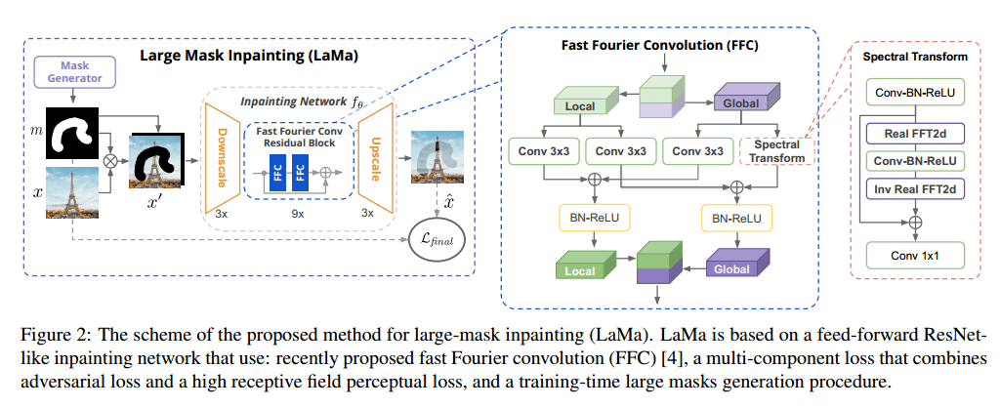

Paper-Resolution-robust Large Mask Inpainting with Fourier Convolutions
目录
资源
- 原文：[2304.02643v1] Segment Anything (arxiv.org)
- 代码：geekyutao/Inpaint-Anything: Inpaint anything using Segment Anything and inpainting models. (github.com)
笔记
目前的图像修复系统往往难以处理：
- 大面积的缺失
- 复杂的几何结构
- 高分辨率
认为这种情况的主要原因之一是修复网络和损失函数中都缺乏有效的感受野（receptive field）。
提出了 large mask inpatienting（LaMa） 的新方法：
基于一种新的修复网络结构，该架构使用具有全图像感受野的快速傅里叶卷积（FFCs）
FFC 允许覆盖整个图像的感受野，FFC 的这种性质提高了网络的感知质量和参数效率
快速傅立叶卷积（FFC）是最近提出的允许在早期层中使用全局上下文的算子。FFC 基于通道快速傅立叶变换（FFT），具有覆盖整个图像的感受野。FFC 将信道分成两个并行分支：
- i）局部分支使用传统卷积
- ii）全局分支使用实数FFT来说明全局上下文。
实数FFT只能应用于实数值信号，而逆实数FFT确保输出是实数值的。与 FFT 相比，实数 FFT 仅使用频谱的一半。具体而言，FFC采取以下步骤：
- 将实数 FFT2d 应用于输入张量：$Real\ FFT2d:\mathbb{R}^{H\times W\times C}\to\mathbb{C}^{H\times \frac{W}{2}\times C}$，并连接实部和虚部：$ComplexToReal:\mathbb{C}^{H\times \frac{W}{2}\times 2C}$
- 在频域中应用卷积块：$ReLU\circ BN\circ Conv1\times 1:\mathbb{R}^{H\times\frac{W}{2}\times2C}\to \mathbb{R}^{H\times \frac{W}{2}\times 2C}$
- 应用逆变换来恢复空间结构：$RealToComplex:\mathbb{R}^{H\times\frac{W}{2}\times 2C}\to \mathbb{C}^{H\times \frac{W}{2}\times C}$，$Inverse\ Real\ FFT2d:\mathbb{C}^{H\times \frac{W}{2}\times C}\to\mathbb{R}^{H\times W\times C}$
- 最后，将 i) 和 ii) 分支输出融合在一起。
FFCs 的功率 FFCs 是完全可微分的，并且易于使用，可以代替传统卷积。由于图像宽的感受野，FFC允许生成器考虑从早期层开始的全局上下文，这对于高分辨率图像修复至关重要。这也带来了更好的效率：可训练的参数可以用于推理和生成，而不是“等待”信息的传播。
高 receptive field 的语义分割网络的感知损失函数
- 促进了全局结构和形态的一致性
- 通过基础预训练网络评估从预测图像和目标图像中提取的特征之间的距离。它不需要精确的重建，允许重建图像的变化。大型掩模修复的重点转向了对全局结构的理解。
- high receptive field base model $\phi_{HRF}(·):\mathcal{L}_{HRFPL}(x,\hat x)=\mathcal{M}\left(\left[\phi_{HRF}(x)-\phi_{HRF}(\hat x)\right]^2\right)$
- $[\cdot -\cdot]^2$ 是逐元素运算
- $\mathcal M$ 是顺序两阶段平均运算（层内平均和层间平均）
- 使用傅里叶或扩展卷积来实现 $\phi_{HRF}(x)$
- 使用对抗性损失来确保修复模型 $f_\theta(x’)$ 生成看起来自然的局部细节，定义了一个鉴别器 $D_{\xi}(\cdot)$，只在与 mask 相交的部分才会获得 “fake” 标签，损失函数 $\mathcal L_D$
- 最终损失函数使用了梯度惩罚 $R_1=E_x||\bigtriangledown D_\xi(x)||^2$，和基于鉴别器的感知损失 $\mathcal L_{DiscPL}$，最终损失函数 $\mathcal L_{final}=\kappa L_{Adv}+\alpha\mathcal L_{HRFPL}+\beta \mathcal L_{DiscPL}+\gamma R_1$
大型训练 masks，释放前两个组件的潜力
- 产生宽而大的掩码，迫使网络充分利用模型的高感受野和损失函数
LaMa 只在低分辨率上训练后，就可以推广到高分辨率图像。

- 目标是修复由未知像素 $m$ 的二进制蒙版掩蔽的彩色图像 $x$
- 掩蔽的图像表示为 $x\odot m$。$m$ 与 $x\odot m$ 堆叠，产生四通道输入张量 $x’=\mathrm{stack}(x\odot m,m)$
- 使用前馈修复网络 $f_\theta(\cdot)$，我们将其称为生成器
- 以 $x’$ 为例，修复网络以完全卷积的方式处理输入，并产生修复的三通道彩色图像 $\hat x=f_\theta(x’)$
- 在从真实图像和合成生成的掩模获得的 $(\mathrm{image},\mathrm{mask})$ 对数据集上执行训练